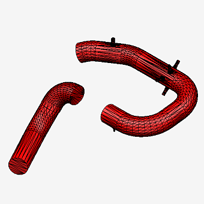
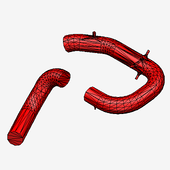
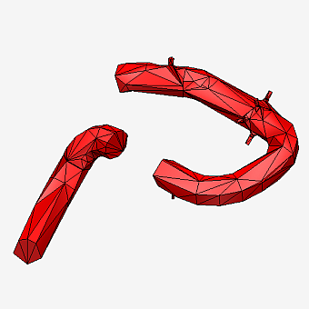
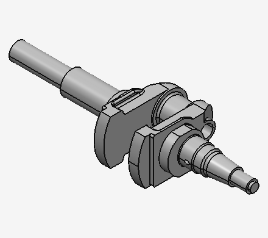
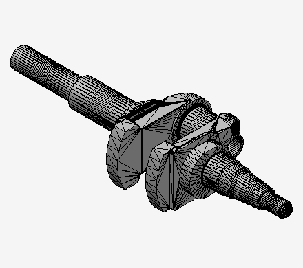
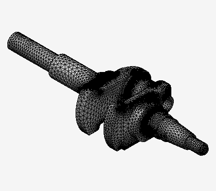

This introduction is aimed to give a quick orientation on the CAD Exchanger SDK capabilities.
If you are completely new to the subject of CAD and 3D modeling, and not quite familiar with concepts of B-Rep (boundary representation) or polygonal representation you may want to spend some time reading the crash course on CAD modeling (part 1, part 2, part 3) to understand multiple concepts used in the CAD world and CAD Exchanger SDK in particular.
CAD Exchanger SDK is written in C++ and has a few wrappers to provide bindings with other programming languages, including C# and Java. This documentation is generated from the original C++ code, and that is why uses C++ API conventions. Nonetheless, understanding SDK API for other languages should be very straightforward, especially if consulting numerous examples.
Most often CAD Exchanger SDK is used to read (import) external files in various 3D formats. This is performed by format-specific subclasses of the base class Base_Reader (e.g. JT_Reader, STEP_Reader and alike). All readers follow the same pattern by providing two methods: ReadFile() to parse the file and Transfer() to convert the contents into format-neutral ModelData_Model object.
When importing a file CAD Exchanger applies automatic healing to improve poor or re-create missing data.
Symmetrically, writing (exporting) to any supported format is performed by the subclasses of the base class Base_Writer (e.g. IGES_Writer, ACIS_Writer, etc). Writing also includes two steps: Transfer() to convert from ModelData_Model object into format-specific representation, and WriteFile() to save that representation in the file.
Many formats can also support arbitrary (C++) streams, not just disk files.
The list of supported formats is available here.
CAD Exchanger tries to convert all data each format is able to support, i.e. to retrieve when reading, and to store when writing.
The most broadly used data include:
Again, if you are not familiar with the above concepts, you might want to read series of our blog posts "Crash course on 3D data" as an introduction (to be published soon).
Data imported from external files (or created bottom-up) can be investigated using various tools:
Here are a couple of examples demonstrating how to compute a bounding box and a volume:
B-Rep representation (ModelData_BRepRepresentation) includes a topological model that describes hierarchy and connectivity information between elements in the 3D model (from vertices to solid), as well as reference to underlying geometries (points, curves and surfaces):
Topological entities subsclass the base class ModelData_Shape, curves subclass ModelData_Curve and surfaces inherit the base class ModelData_Surface.
CAD Exchanger supports all types of bodies: solid, sheet, wireframe, and acorn (single vertex) bodies. Body (ModelData_Body) belongs to B-Rep representation itself.
Supported geometries include:
Each topological entity can be explored for its children. Vertices, edges, faces can be interrogated for associated geometries.
Curves and surfaces can be interrogated for their defining parameters (e.g. axis placement for a circle, or control points for a NURBS curve):
B-Rep bodies can be created using solid and sheet modeling API, such as solid primitives and sweep operations, or direct step-by-step bottom-up process:
Polygonal representation (ModelData_PolyRepresentation) defines a tessellated (mesh) representation of a part. The part may have zero or more polygonal representations.
In the case of multiple representations they are said to define LOD's (Levels of Details), i.e. definition of the same part with different precision. By convention, the representations should be ordered from fine to coarse LOD:

Fine LOD (6506 triangles) |

Medium LOD (2380 triangles) |

Coarse LOD (610 triangles) |
CAD Exchanger supports triangular meshes, polylines and point clouds. All of them subclass the base class ModelData_PolyVertexSet.
Polygonal representations are either imported from the source file or can be created bottom-up (by populating lists of mesh nodes, normals) or generated from B-Rep representations with the help of meshers.
A B-Rep representation (e.g. imported from a STEP file) requires conversion to a tessellated representation in order to be displayed with the help of any graphical library (OpenGL, three.js or alike) or to be saved in a mesh-only format (e.g. VRML or STL). This conversion is performed by a mesher (ModelAlgo_BRepMesher).
CAD Exchanger SDK contains two classes of meshers serving two different purposes and making different trade-off's in implementation:
Each mesher supports various parameters (chordal and angular deflection, min/max size, etc) in order to control the resulting mesh.

Original B-Rep | |

Visualization mesh |

Computational mesh |
In addition to geometrical data, the model can contain various meta-data (i.e. auxiliary or non-geometrical).
Such data are most often attached to elements of the product structure (assemblies, parts and instances thereof) or topological entities in the B-Rep representations. Appearance attributes (colors and materials) can also be attached to polygonal entities.
A color (ModelData_Color) is defined via RGBA tuple; a material (ModelData_Material) is combination of various components (ambient, diffusive, specular and emissive colors); a layer (ModelData_Layer) is defined via an integer id.
An object can also bear user-defined properties defined via tables of {name, value} pairs (ModelData_PropertyTable). The value can have numerical, string, date or other types.
Product structure elements (i.e. subclasses of ModelData_SceneGraphElement) can be directly interrogated for respective meta-data, whereas topological entities are interrogated in the context of their parent B-Rep representation:
Most of the times, 3D models imported from external files or created inside the user's app are meant to be visualized in interactive 3D view provided by that app.
Visualization can be implemented using some external 3D engine (such as Open Scene Graph, VTK, Qt 3D or plain OpenGL API). In this case CAD Exchanger SDK can be used to import (or create) the 3D model, generate its tessellated representation (with the help of mesher) and pass that tessellation into the visualization engine.
Refer to the "Visualizing 3D models via CAD Exchanger SDK" blog post describing a typical workflow how to achieve that.
An alternative approach to that is using the visualization component of the CAD Exchanger SDK itself. It allows to build highly interactive 3D apps on top of various platform-dependent frameworks (e.g. Qt/QML, C#/WPF, etc). Platform-dependent part is very well separated from platform-independent API which eases further migration from one framework to another.
To display a 3D model, an interactive scene (ModelPrs_Scene) is populated with the scene graph consisting of individual scene nodes. A scene can be directly created from the ModelData_Model object (by traversing its product structure and available part representations, B-Rep or meshes) or populated with user-defined objects:
Supported operations include:
Once you have completed reading this overview and received an overall understanding of CAD Exchanger SDK capabilities, you may proceed to reading various chapters of the User's Guide and to explore available examples to start building your first app.